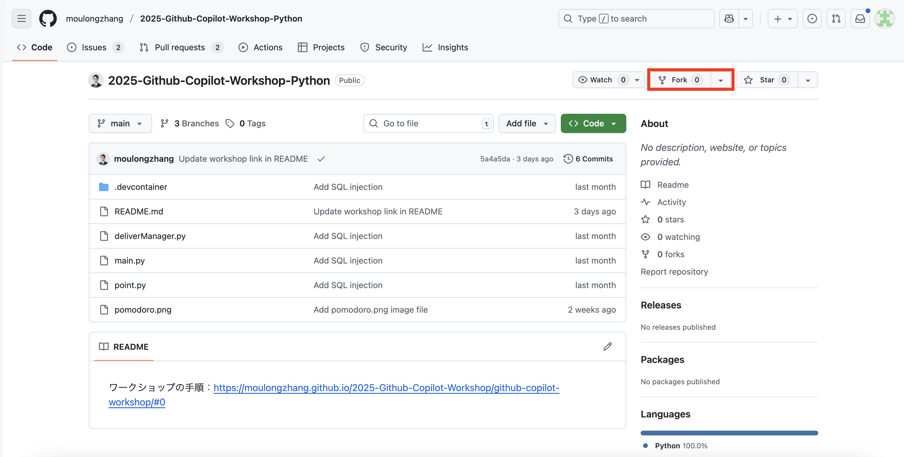
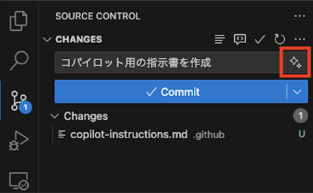
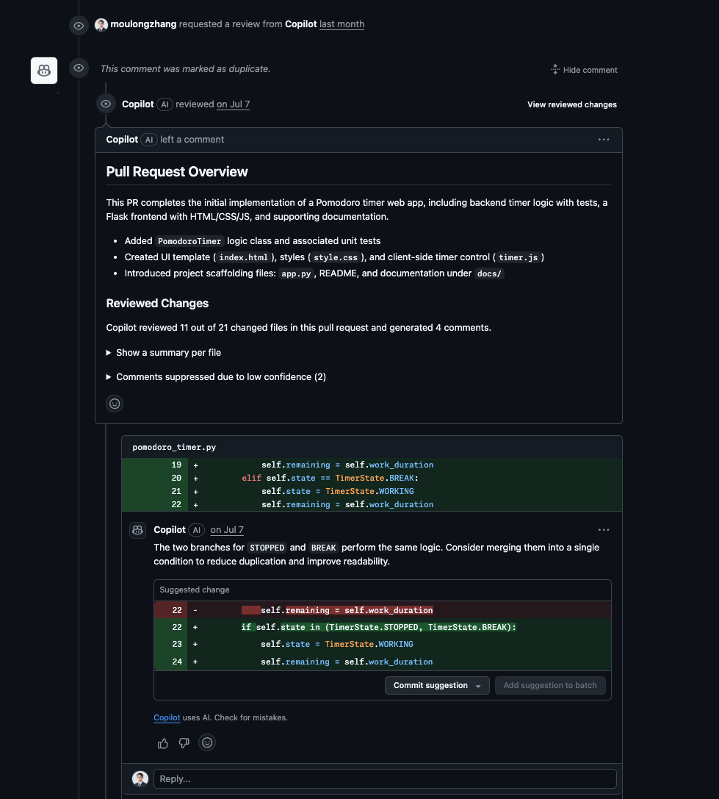
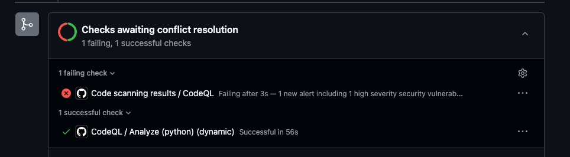

Bienvenue à l'Atelier GitHub Copilot ! Dans cet atelier, vous apprendrez à utiliser GitHub Copilot pour expliquer et améliorer le code. GitHub Copilot Chat permet un dialogue interactif avec l'IA à travers une expérience de chat. Apprenons à utiliser GitHub Copilot à travers cet atelier !

Objectifs du jour
- Comprendre les différentes fonctionnalités de GitHub Copilot
- Développer une nouvelle application en utilisant le mode agent
Prérequis
- Visual Studio Code est installé
- Une licence GitHub Copilot est disponible
- Un compte GitHub est disponible
Cet atelier utilise le dépôt GitHub suivant :
URL du projet : https://github.com/moulongzhang/2025-Github-Copilot-Workshop-Python
Étape 1 : Forker le dépôt
Tout d'abord, ouvrez l'URL du projet ci-dessus dans votre navigateur et forkez le dépôt :
- Ouvrez l'URL du projet (https://github.com/moulongzhang/2025-Github-Copilot-Workshop-Python) dans votre navigateur
- Cliquez sur le bouton Fork en haut à droite

- Cliquez sur le bouton Create fork sur l'écran de création du fork

Une fois le fork terminé, une copie du dépôt sera créée dans votre compte GitHub.
Étape 2 : Configuration de l'environnement de développement
En utilisant votre dépôt forké, vous pouvez démarrer le projet en utilisant l'une des méthodes suivantes :
Méthode A : Utiliser GitHub Codespaces (Recommandé)
- Sur la page de votre dépôt forké (
https://github.com/[votre-nom-utilisateur]/2025-Github-Copilot-Workshop-Python) - Cliquez sur le bouton vert Code
- Sélectionnez l'onglet Codespaces
- Cliquez sur Create codespace on main

Méthode B : Cloner dans l'environnement local
Si vous avez VS Code installé localement :
- Ouvrez le Terminal ou l'Invite de commandes
- Clonez votre dépôt forké avec la commande suivante :
git clone https://github.com/[votre-nom-utilisateur]/2025-Github-Copilot-Workshop-Python.git
- Naviguez vers le répertoire cloné :
cd 2025-Github-Copilot-Workshop-Python
- Ouvrez le projet dans VS Code :
code .
Étape 3 : Installer les extensions requises
Après avoir ouvert le projet, veuillez installer les extensions suivantes :
- Installer l'extension GitHub Copilot
- Installer l'extension GitHub Copilot Chat
- Installer l'extension Python
Étape 4 : Vérification de la configuration
- Confirmez que vous êtes connecté à votre compte GitHub dans VS Code
- Confirmez que la fonctionnalité Copilot est activée
- Confirmez que l'interpréteur Python est correctement configuré
Découvrons la fonctionnalité de base de complétion de code de GitHub Copilot.
Installer les extensions Copilot
- Installer l'extension GitHub Copilot
- Installer l'extension GitHub Copilot Chat
Vérification de la configuration
Assurez-vous que vous êtes connecté à VS Code.
Essayer la complétion de code
Créez un nouveau fichier Python et entrez le commentaire suivant :
# Fonction pour calculer la suite de Fibonacci
def fibonacci(n):
Vérifiez que Copilot suggère automatiquement du code.
Vue d'ensemble
⚙️ github.copilot.nextEditSuggestions.enabled est un paramètre qui active la fonctionnalité de suggestion d'édition de nouvelle génération de GitHub Copilot. Cette fonctionnalité vous permet de recevoir des suggestions d'édition de code plus avancées.
1. Ouvrir VS Code
2. Accéder aux paramètres
Ouvrez l'écran des paramètres en utilisant l'une des méthodes suivantes :
Méthode A : Depuis le menu
- Windows/Linux :
File→Preferences→Settings - macOS :
Code→Settings...→Settings
Méthode B : Raccourci clavier
- Windows/Linux :
Ctrl + , - macOS :
Cmd + ,
Méthode C : Palette de commandes
Ctrl + Shift + P(Windows/Linux) ouCmd + Shift + P(macOS)- Sélectionnez
Preferences: Open Settings (UI)
3. Rechercher les paramètres
Entrez ce qui suit dans la boîte de recherche des paramètres :
github.copilot.nextEditSuggestions.enabled
4. Activer le paramètre
- Cochez la case pour l'élément de paramètre affiché dans les résultats de recherche
- Ou changez
falseentrue
5. Confirmer le paramètre
Vérifiez que le paramètre est correctement appliqué :
- Redémarrez VS Code (recommandé)
- Éditez du code dans l'éditeur et confirmez que la nouvelle fonctionnalité de suggestion fonctionne
Méthode alternative : Édition directe dans settings.json
1. Ouvrir le fichier settings.json
Ctrl + Shift + P(Windows/Linux) ouCmd + Shift + P(macOS)- Sélectionnez
Preferences: Open User Settings (JSON)
2. Ajouter le paramètre
{
"github.copilot.nextEditSuggestions.enabled": true
}
3. Enregistrer le fichier
Ctrl + S(Windows/Linux) ouCmd + S(macOS)
Essayons-le
Ouvrez le fichier point.py inclus dans le projet. Ce fichier contient une classe représentant des points dans l'espace à deux dimensions. Copiez l'extrait de code ci-dessous dans le fichier point.py.
import math
class Point2D:
def __init__(self, x, y):
self.x = x
self.y = y
def distance_to(self, other):
dx = self.x - other.x
dy = self.y - other.y
return math.sqrt(dx * dx + dy * dy)
def __str__(self):
return f"Point2D({self.x}, {self.y})"
Maintenant, nous voulons étendre cette classe pour représenter des points dans l'espace à trois dimensions. Tout d'abord, changeons manuellement le nom de la classe en Point3D. GitHub Copilot suggérera ensuite les prochains candidats d'édition.
Les suggestions devraient afficher des changements comme :
- Ajout du paramètre
zà la méthode__init__ - Ajout de
self.z = z - Extension de la méthode
distance_topour le calcul de distance en trois dimensions - Affichage de la coordonnée z dans la méthode
__str__
Dans cet état, appuyer sur la touche Tab déplacera le curseur à l'emplacement où GitHub Copilot fait des suggestions. Pour accepter la suggestion, appuyez à nouveau sur la touche Tab.
GitHub Copilot devrait ensuite suggérer le prochain candidat d'édition. Cette suggestion peut également être acceptée en appuyant sur la touche Tab. L'utilisation de la suggestion d'édition suivante vous permet d'éditer le code efficacement.
Voyons les résultats
Continuons à étendre la classe Point2D en Point3D. Vous devriez pouvoir adapter toutes les méthodes pour l'espace à trois dimensions.
Exemple de code final attendu :
import math
class Point3D:
def __init__(self, x, y, z):
self.x = x
self.y = y
self.z = z
def distance_to(self, other):
dx = self.x - other.x
dy = self.y - other.y
dz = self.z - other.z
return math.sqrt(dx * dx + dy * dy + dz * dz)
def __str__(self):
return f"Point3D({self.x}, {self.y}, {self.z})"
Essayons aussi avec les commentaires TODO
Remplacez 2D (deux dimensions) par 3D (trois dimensions) dans la première ligne commentée.
# Classe représentant des points dans l'espace à trois dimensions
class Point2D:
def __init__(self, x, y):
self.x = x
self.y = y
def distance_to(self, other):
# TODO: Ajouter le code de calcul de distance ici
pass
def __str__(self):
# TODO: Retourner la représentation en chaîne
pass
Placez le curseur après les commentaires TODO et vérifiez les suggestions de Copilot.
Notes importantes
- Assurez-vous que l'extension GitHub Copilot de VS Code est mise à jour à la dernière version
- Le redémarrage de VS Code est recommandé après les changements de paramètres
Dépannage
Si les paramètres ne sont pas trouvés
- Confirmez que l'extension GitHub Copilot est installée
- Confirmez que l'extension est mise à jour à la dernière version
- Redémarrez VS Code et réessayez
Si la fonctionnalité ne fonctionne pas
- Confirmez que vous êtes connecté à GitHub Copilot
- Vérifiez la connexion Internet
- Vérifiez les messages d'erreur dans la console VS Code
Créer un fichier
Veuillez enregistrer le fichier suivant sous le nom delivery_manager.py.
import time
import random
from typing import List, Callable, Optional
from dataclasses import dataclass, field
from enum import Enum
class Event:
"""Classe d'événement simple (équivalent des événements Unity)"""
def __init__(self):
self._handlers: List[Callable] = []
def add_handler(self, handler: Callable):
"""Ajouter un gestionnaire d'événements"""
if handler not in self._handlers:
self._handlers.append(handler)
def remove_handler(self, handler: Callable):
"""Supprimer un gestionnaire d'événements"""
if handler in self._handlers:
self._handlers.remove(handler)
def invoke(self, sender, args=None):
"""Déclencher un événement"""
for handler in self._handlers:
handler(sender, args)
@dataclass
class KitchenObjectSO:
"""Classe de données d'objet de cuisine"""
object_name: str
object_id: int
@dataclass
class RecipeSO:
"""Classe de données de recette"""
recipe_name: str
kitchen_object_so_list: List[KitchenObjectSO]
@dataclass
class RecipeListSO:
"""Classe de données de liste de recettes"""
recipe_so_list: List[RecipeSO] = field(default_factory=list)
class PlateKitchenObject:
"""Objet de cuisine assiette"""
def __init__(self):
self._kitchen_object_so_list: List[KitchenObjectSO] = []
def add_kitchen_object(self, kitchen_object: KitchenObjectSO):
"""Ajouter un objet de cuisine"""
self._kitchen_object_so_list.append(kitchen_object)
def get_kitchen_object_so_list(self) -> List[KitchenObjectSO]:
"""Obtenir la liste des objets de cuisine"""
return self._kitchen_object_so_list.copy()
class KitchenGameManager:
"""Gestionnaire de jeu de cuisine (Singleton)"""
_instance: Optional['KitchenGameManager'] = None
def __init__(self):
self._is_game_playing = False
@classmethod
def get_instance(cls) -> 'KitchenGameManager':
"""Obtenir l'instance Singleton"""
if cls._instance is None:
cls._instance = cls()
return cls._instance
def is_game_playing(self) -> bool:
"""Vérifier si le jeu est en cours"""
return self._is_game_playing
def start_game(self):
"""Démarrer le jeu"""
self._is_game_playing = True
def stop_game(self):
"""Arrêter le jeu"""
self._is_game_playing = False
class DeliveryManager:
"""Classe de gestion de livraison (version Python)"""
_instance: Optional['DeliveryManager'] = None
def __init__(self, recipe_list_so: RecipeListSO):
# Définitions d'événements
self.on_recipe_spawned = Event()
self.on_recipe_completed = Event()
self.on_recipe_success = Event()
self.on_recipe_failed = Event()
# Variables privées
self._recipe_list_so = recipe_list_so
self._waiting_recipe_so_list: List[RecipeSO] = []
self._spawn_recipe_timer = 0.0
self._spawn_recipe_timer_max = 4.0
self._waiting_recipes_max = 4
self._successful_recipes_amount = 0
self._last_update_time = time.time()
@classmethod
def get_instance(cls, recipe_list_so: RecipeListSO = None) -> 'DeliveryManager':
"""Obtenir l'instance Singleton"""
if cls._instance is None:
if recipe_list_so is None:
raise ValueError("recipe_list_so est requis pour la création initiale")
cls._instance = cls(recipe_list_so)
return cls._instance
def update(self):
"""Traitement de mise à jour par image (équivalent à Update d'Unity)"""
current_time = time.time()
delta_time = current_time - self._last_update_time
self._last_update_time = current_time
self._spawn_recipe_timer -= delta_time
if self._spawn_recipe_timer <= 0.0:
self._spawn_recipe_timer = self._spawn_recipe_timer_max
kitchen_game_manager = KitchenGameManager.get_instance()
if (kitchen_game_manager.is_game_playing() and
len(self._waiting_recipe_so_list) < self._waiting_recipes_max):
# Sélectionner une recette au hasard
waiting_recipe_so = random.choice(self._recipe_list_so.recipe_so_list)
self._waiting_recipe_so_list.append(waiting_recipe_so)
# Déclencher l'événement
self.on_recipe_spawned.invoke(self)
def deliver_recipe(self, plate_kitchen_object: PlateKitchenObject):
"""Vérifier si les ingrédients de la recette correspondent aux ingrédients de l'assiette"""
for i, waiting_recipe_so in enumerate(self._waiting_recipe_so_list):
plate_ingredients = plate_kitchen_object.get_kitchen_object_so_list()
# Vérifier si le nombre d'ingrédients correspond
if len(waiting_recipe_so.kitchen_object_so_list) == len(plate_ingredients):
plate_contents_matches_recipe = True
# Vérifier chaque ingrédient de la recette
for recipe_kitchen_object_so in waiting_recipe_so.kitchen_object_so_list:
ingredient_found = False
# Correspondre avec les ingrédients de l'assiette
for plate_kitchen_object_so in plate_ingredients:
if plate_kitchen_object_so == recipe_kitchen_object_so:
ingredient_found = True
break
if not ingredient_found:
plate_contents_matches_recipe = False
break
# Si les ingrédients correspondent complètement
if plate_contents_matches_recipe:
self._successful_recipes_amount += 1
self._waiting_recipe_so_list.pop(i)
# Déclencher les événements de succès
self.on_recipe_completed.invoke(self)
self.on_recipe_success.invoke(self)
return
# Si aucune recette correspondante n'est trouvée
self.on_recipe_failed.invoke(self)
def get_waiting_recipe_so_list(self) -> List[RecipeSO]:
"""Obtenir la liste des recettes en attente"""
return self._waiting_recipe_so_list.copy()
def get_successful_recipes_amount(self) -> int:
"""Obtenir le nombre de recettes réussies"""
return self._successful_recipes_amount
# Exemple d'utilisation
if __name__ == "__main__":
# Créer des données d'exemple
tomato = KitchenObjectSO("Tomate", 1)
lettuce = KitchenObjectSO("Laitue", 2)
bread = KitchenObjectSO("Pain", 3)
# Recettes d'exemple
sandwich_recipe = RecipeSO("Sandwich", [bread, lettuce, tomato])
salad_recipe = RecipeSO("Salade", [lettuce, tomato])
recipe_list = RecipeListSO([sandwich_recipe, salad_recipe])
# Initialiser le gestionnaire de jeu et le gestionnaire de livraison
game_manager = KitchenGameManager.get_instance()
game_manager.start_game()
delivery_manager = DeliveryManager.get_instance(recipe_list)
# Configurer les gestionnaires d'événements
def on_recipe_spawned(sender, args):
print("Une nouvelle recette a été générée !")
def on_recipe_success(sender, args):
print("Livraison de recette réussie !")
def on_recipe_failed(sender, args):
print("Échec de la livraison de la recette...")
delivery_manager.on_recipe_spawned.add_handler(on_recipe_spawned)
delivery_manager.on_recipe_success.add_handler(on_recipe_success)
delivery_manager.on_recipe_failed.add_handler(on_recipe_failed)
# Exécution d'exemple
print("Démarrage du jeu...")
# Exécuter le processus de mise à jour pendant 5 secondes
start_time = time.time()
while time.time() - start_time < 5:
delivery_manager.update()
time.sleep(0.1) # Mise à jour toutes les 100ms
print(f"Nombre de recettes en attente : {len(delivery_manager.get_waiting_recipe_so_list())}")
# Test de livraison d'exemple
plate = PlateKitchenObject()
plate.add_kitchen_object(bread)
plate.add_kitchen_object(lettuce)
plate.add_kitchen_object(tomato)
print("Livraison du sandwich...")
delivery_manager.deliver_recipe(plate)
print(f"Nombre de recettes réussies : {delivery_manager.get_successful_recipes_amount()}")
Faisons expliquer ce code par Copilot Chat.
Ouvrir Copilot Chat
- Cliquez sur l'icône Chat (icône de bulle de chat) dans la barre latérale de VS Code pour ouvrir Copilot Chat
- Ou ouvrez le panneau Chat avec
Ctrl+Alt+I(sur macOSCtrl+Cmd+I)
Vérifier le mode Chat
Confirmez que le mode chat est défini sur "Question" (nous présenterons le mode "Agent" plus tard).
Demander l'explication du fichier
- Entrez
#delivery_manager.pydans le champ de chat - Entrez le prompt "Veuillez expliquer ce fichier entier."
- Appuyez sur Entrée et Copilot Chat expliquera l'intégralité du fichier
delivery_manager.py
Exercice
Demandons à Copilot Chat quelles sont les parties problématiques de ce code.
1. Demander les problèmes globaux de la classe
Tout d'abord, demandons quels problèmes ce code a dans son ensemble en tant que classe.
Demandez à Copilot Chat :
En examinant cette classe DeliveryManager dans son ensemble, quels problèmes et points d'amélioration y a-t-il ? Veuillez me le dire du point de vue des modèles de conception, de la qualité du code et de la maintenabilité.
2. Se concentrer sur des méthodes spécifiques pour les points d'amélioration
Ensuite, concentrons-nous sur la méthode deliver_recipe() et demandons quelles méthodes existent pour améliorer cette méthode.
Étapes :
- Entrez
#deliver_recipedans le champ de chat - Les candidats pour les éléments de code (fonctions, classes, variables, etc.) seront affichés
- Sélectionnez la méthode
deliver_recipe - Entrez la question suivante :
Quelles méthodes existent pour améliorer cette méthode deliver_recipe ? Veuillez faire des suggestions du point de vue de la lisibilité, des performances et de la gestion des erreurs.
Fonction de révision du code
Pour améliorer le code actuel, demandez à Copilot Chat :
Veuillez améliorer ce code Python. J'aimerais des suggestions du point de vue des performances, de la lisibilité et de la gestion des erreurs.
Vérifier du point de vue de la sécurité
Y a-t-il des problèmes de sécurité avec ce code ?
Qu'est-ce que le mode Agent ?
Le mode Agent est une fonctionnalité puissante de GitHub Copilot qui permet à l'IA de prendre des actions de manière autonome pendant le développement. Contrairement au mode Question traditionnel (mode Q&R), le mode Agent permet à Copilot d'effectuer la série d'actions suivantes automatiquement.
Caractéristiques du mode Agent
- Lecture et modification de fichiers : Le mode Agent lit et modifie automatiquement les fichiers nécessaires
- Exécution de commandes : Exécution de commandes dans le terminal (par exemple, installation de packages, exécution de tests)
- Création et édition de plusieurs fichiers : Génération de nouveau code et modification du code existant
- Révision automatique : Exécution de tests et vérification de linting après les changements de code
Cas d'utilisation
- Développement de nouvelles fonctionnalités
- Refactorisation de code
- Correction de bugs
- Écriture de tests
- Configuration de projets
Démarrer le mode Agent
- Dans le panneau Copilot Chat, vérifiez la liste déroulante en haut
- Sélectionnez Agent au lieu de "Question"
- Ou tapez
@workspacedans le champ de chat
Veuillez confirmer que l'agent Copilot peut être utilisé. Si les informations du compte sont nécessaires pour utiliser l'agent Copilot, veuillez vous connecter à partir de l'écran de connexion affiché.
Ensuite, veuillez vérifier les paramètres suivants :
Activer copilot-chat.agentic.claude-3.5-sonnet.enabled
Cette fonctionnalité de paramètre vous permet d'utiliser Claude 3.5 Sonnet dans Copilot Agent. Activez-la en modifiant directement settings.json.
- Ouvrez la palette de commandes avec
Ctrl + Shift + P(Windows/Linux) ouCmd + Shift + P(macOS) - Sélectionnez
Preferences: Open User Settings (JSON) - Ajoutez le paramètre suivant :
{
"github.copilot.chat.agentic.claude-3.5-sonnet.enabled": true
}
- Enregistrez le fichier avec
Ctrl + S(Windows/Linux) ouCmd + S(macOS)
Activer copilot-chat.agentic.deepThinking.enabled
Cette fonctionnalité de paramètre active la fonctionnalité de réflexion profonde de Copilot Agent. Activez-la en modifiant settings.json.
- Ouvrez la palette de commandes avec
Ctrl + Shift + P(Windows/Linux) ouCmd + Shift + P(macOS) - Sélectionnez
Preferences: Open User Settings (JSON) - Ajoutez le paramètre suivant :
{
"github.copilot.chat.agentic.deepThinking.enabled": true
}
- Enregistrez le fichier avec
Ctrl + S(Windows/Linux) ouCmd + S(macOS)
Notes
- Assurez-vous que l'extension GitHub Copilot est mise à jour à la dernière version
- Le redémarrage de VS Code est recommandé après les changements de paramètres
- Ces fonctionnalités peuvent nécessiter un accès bêta ou des autorisations spéciales selon votre licence
Jusqu'à présent, nous avons appris l'utilisation de base de GitHub Copilot disponible dans VS Code. Ensuite, développons réellement une application.
Dans ce travail pratique, nous développerons une application de minuteur Pomodoro. Cette application a des fonctionnalités pour définir le temps de travail et le temps de pause et gérer les minuteurs.
Nous visons à créer une application avec l'interface utilisateur suivante :

Créons d'abord un nouveau fichier Python dans VS Code. Puisque nous voulons créer cela en tant qu'application web, nous utiliserons Flask. Nommons le fichier principal "app.py".
Vue d'ensemble du projet
Créer une application web de minuteur pour la technique Pomodoro.
Fonctionnalités requises
- Minuteur de travail de 25 minutes
- Minuteur de pause de 5 minutes
- Démarrage/arrêt/réinitialisation du minuteur
- Affichage de la progression et fonctionnalité de statistiques
- Notifications du navigateur et notifications sonores
- Interface utilisateur web réactive
Tout d'abord, plutôt que de commencer l'implémentation immédiatement, consultons Copilot sur l'approche et la conception à adopter. À partir de maintenant, nous procéderons entièrement en mode agent.
Ce qui est utile lors de la création d'une application web avec une interface utilisateur comme celle-ci est la fonctionnalité de téléchargement d'image de Copilot Chat. En l'utilisant, vous pouvez faire comprendre à Copilot l'image de l'interface utilisateur de votre application.
Tout d'abord, enregistrez l'image de l'interface utilisateur de la page précédente sous le nom pomodoro.png à la racine du projet. Ensuite, cliquez sur Add Context dans le champ de chat et sélectionnez "Image from Clipboard" ou "Files & Folders...". Puis sélectionnez l'image de l'interface utilisateur.


Une fois l'image téléchargée, elle sera affichée dans Copilot Chat.
Ensuite, entrez le prompt suivant :
Nous prévoyons de créer une application web de minuteur Pomodoro dans ce projet. L'image ci-jointe est une maquette d'interface utilisateur pour cette application. Quelle conception devrions-nous adopter pour créer cette application en utilisant Flask et HTML/CSS/JavaScript ? Veuillez suggérer une architecture.
Il suggérera alors une architecture d'application web recommandée.
S'il y a des points qui devraient être améliorés ou des considérations qui manquent dans cette architecture, essayez de les signaler. Par exemple, la suggestion suivante :
En considérant la facilité des tests unitaires, veuillez également énumérer toutes les améliorations ou ajouts nécessaires à l'architecture actuelle.
Après cet échange, une fois la conception architecturale établie, sauvegardons ce contenu dans un fichier. Ce faisant, vous pouvez référencer le même contenu architectural même si vous ouvrez une session de chat différente.
Puisque l'architecture a été établie à travers notre conversation jusqu'à présent, veuillez compiler une proposition d'architecture d'application web dans un fichier appelé architecture.md à la racine du projet, basée sur le contenu de notre conversation.
Maintenant que la maquette de l'interface utilisateur et la conception architecturale sont établies, considérons quelles fonctionnalités spécifiques doivent être implémentées. Consultons également Copilot Chat à ce sujet. À ce moment-là, attachons pomodoro.png et architecture.md.
Pour créer cette application de minuteur Pomodoro, veuillez énumérer les fonctions nécessaires qui doivent être implémentées.

Améliorons ce contenu par le chat avec Copilot. Une fois le contenu finalisé, sauvegardons ce contenu dans un fichier appelé features.md, tout comme nous l'avons fait avec l'architecture.
Merci. Ce contenu semble bon, alors veuillez écrire la liste des fonctions qui doivent être implémentées dans un fichier appelé features.md.
Nous sommes sur le point de commencer l'implémentation, mais une astuce pour maîtriser Copilot est de ne pas essayer d'implémenter de grandes fonctions d'un seul coup, mais de commencer par implémenter de petites fonctions en premier. Cela améliore la précision du code que Copilot suggère et permet une progression plus fluide du développement.
Consultons également Copilot sur la granularité à utiliser pour décomposer et implémenter ce développement d'application. Ici, attachons pomodoro.png, architecture.md et features.md.
Je veux implémenter cette application de minuteur Pomodoro étape par étape. Sur la base de l'image jointe, de l'architecture et de la liste des fonctionnalités, veuillez suggérer quelle granularité devrait être utilisée pour implémenter les fonctions et proposer un plan d'implémentation étape par étape.
Quand j'ai essayé, il a suggéré un plan composé de 6 étapes. S'il y a des points que vous aimeriez voir améliorés, essayez de les signaler à Copilot. Et sauvegardons ce contenu dans un fichier appelé plan.md pour qu'il puisse être référencé plus tard. Veuillez réfléchir vous-même au prompt qui devrait être utilisé pour donner des instructions.
Maintenant que toute la préparation est complète, commençons enfin l'implémentation. En suivant le plan d'implémentation suggéré à l'étape précédente, nous implémenterons la fonctionnalité étape par étape.
Préparation de la structure du projet
Tout d'abord, créons une structure de répertoire de projet selon notre architecture.
Veuillez d'abord modifier la structure actuelle du dossier du projet pour réaliser une architecture comme architecture.md. Déplacez les fichiers et modifiez les fichiers de configuration si nécessaire.
Ensuite, après avoir attaché pomodoro.png, architecture.md et plan.md, donnez des instructions à Copilot comme ceci :
Veuillez implémenter l'étape 1 de plan.md. Si vous devez déplacer des fichiers qui existent déjà dans ce projet vers différents répertoires, veuillez également effectuer ce travail. S'il y a des considérations supplémentaires nécessaires, veuillez me poser des questions.
Dans mon cas, il a posé des questions qui nécessitaient une considération comme indiqué ci-dessous. Dans de tels cas, fournissez les informations nécessaires.

Après cela, Copilot implémente l'étape 1. Une fois l'implémentation terminée, Copilot construit le projet de sa propre initiative et vérifie les erreurs. Si des erreurs se produisent, il fait des corrections supplémentaires pour résoudre ces erreurs. Ce genre de comportement autonome est caractéristique du mode agent.
Une fois l'implémentation terminée, vérifiez les points suivants :
- Structure des répertoires : Est-elle structurée selon l'architecture recommandée ?
- Fichiers de base : Les fichiers de base nécessaires (app.py, modèles HTML, fichiers CSS, etc.) sont-ils créés ?
- Vérification du fonctionnement : Effectuez des tests de fonctionnement simples pour voir si des erreurs se produisent ?
Ci-dessous le résultat de l'implémentation de l'étape 1 dans mon cas. Quel type d'application cela devient à ce stade différera d'une personne à l'autre.

Avant de continuer avec l'implémentation, écrivons des tests unitaires pour la fonctionnalité implémentée. En écrivant des tests unitaires, nous pouvons confirmer que les changements dans les étapes ultérieures n'affectent pas la fonctionnalité existante.
Si des tests unitaires sont déjà implémentés à l'étape de la page précédente, veuillez sauter cette page.
Implémentation des tests
Essayez d'exécuter un prompt comme celui-ci :
Il n'y a pas du tout de tests unitaires pour l'implémentation actuelle, alors veuillez implémenter des tests unitaires.
L'agent Copilot demandera alors s'il est possible d'utiliser des commandes pour installer les dépendances pour les tests unitaires. Comme ceci, les agents demandent toujours la confirmation de l'utilisateur avant d'exécuter une commande. Ici, cliquez sur "Continuer" pour autoriser l'exécution des commandes nécessaires.

Copilot exécute ensuite la commande précédente dans le terminal dans VS Code et installe les dépendances nécessaires. De même par la suite, Copilot demande toujours la confirmation de l'utilisateur avant d'exécuter une commande. Si l'exécution de cette commande provoque une erreur, l'agent fait des corrections supplémentaires pour résoudre cette erreur.
Cette section est optionnelle. Veuillez continuer si vous avez déjà appris les fonctions de base de Copilot et souhaitez relever une implémentation plus avancée.
À partir de maintenant, implémentons les fonctionnalités restantes étape par étape en tant qu'exercice libre.
Voici quelques points qui devraient être utiles.
Lorsque vous voulez donner des instructions pour l'interface utilisateur
Lorsque vous souhaitez donner des instructions pour des éléments spécifiques sur l'interface utilisateur, vous pouvez faire reconnaître ces éléments à Copilot en téléchargeant une capture d'écran de l'interface utilisateur vers Copilot. À ce moment-là, il est bon d'encercler ou de dessiner des flèches sur la capture d'écran pour indiquer clairement quels éléments vous souhaitez donner des instructions.
Alternativement, vous pouvez télécharger deux captures d'écran - celle actuelle et celle attendue - pour que Copilot vérifie les différences et donne des instructions pour se rapprocher le plus possible de l'interface utilisateur attendue.
Lorsque vous donnez les mêmes instructions de manière répétée
Lors de l'écriture de prompts ou de la spécification de contexte, si vous donnez fréquemment des instructions similaires, vous pouvez faire en sorte que Copilot se souvienne de ces instructions. Plus précisément, créez un fichier appelé .github/copilot-instructions.md dans votre projet et écrivez-y des instructions. Lorsque ce fichier existe, Copilot charge automatiquement ces instructions et peut les référencer dans les chats suivants.
Ci-dessous un exemple d'instructions personnalisées.
Ce projet implémente un minuteur Pomodoro avec Flask.
Les suivants sont des fichiers importants dans le projet. Veuillez référencer ces fichiers selon les besoins pour les instructions de l'utilisateur.
- `pomodoro.png` : Ceci est la maquette de l'interface utilisateur de l'application.
- `architecture.md` : Ceci est le document d'architecture de l'application.
- `features.md` : Ceci est la liste des fonctions à implémenter.
- `plan.md` : Ceci est le plan d'implémentation étape par étape.
De plus, en enregistrant des commandes spécifiques au projet telles que des commandes pour construire le projet ou exécuter des tests, Copilot utilisera automatiquement ces commandes.
Lorsque l'implémentation ne progresse pas ou que les bugs ne peuvent pas être résolus
Dans de tels cas, essayez les approches suivantes :
- Donnez des instructions pour afficher des informations de débogage et demandez à Copilot d'analyser cette sortie.
- Essayez d'autres modèles.
Committons le code créé dans le dépôt Git et poussons-le vers une branche distante. Ici, nous présenterons trois méthodes.
Méthode A : Utiliser les commandes dans le terminal
La méthode traditionnelle d'exécution directe des commandes Git dans le terminal :
git add .
git commit -m "Ajouter la fonctionnalité de minuteur Pomodoro"
git push origin feature/pomodoro-timer
Méthode B : Utiliser le contrôle de source de VS Code
Méthode utilisant la fonctionnalité Git intégrée de VS Code :
- Ouvrez l'onglet Contrôle de source de VS Code
- Cliquez sur le bouton + à côté des fichiers modifiés pour ajouter à la zone de staging
- Cliquez sur le bouton ✨ pour que Copilot génère un message de commit

- Cliquez sur le bouton Commit (bouton bleu) pour pousser vers la branche distante
Méthode C : Utiliser le serveur MCP (Pour ceux qui l'ont configuré)
Si vous avez déjà configuré le serveur MCP, vous pouvez donner des instructions directement à Copilot en mode agent :
La création de la fonction est terminée, alors veuillez ajouter les différences de code à la zone de staging git.
Ensuite, veuillez committer avec un message de commit approprié et pousser les changements vers la branche distante.

Ensuite, nous gérerons le plan d'implémentation en tant que problèmes GitHub :
Veuillez créer des problèmes sur GitHub pour chaque étape dans plan.md
Cette instruction fera exécuter à Copilot ce qui suit :
- Créer un problème individuel sur GitHub pour chaque étape dans
plan.md - Définir un titre et une description appropriés pour chaque problème
- Utiliser des étiquettes appropriées
Lorsque vous envoyez votre code, GitHub Copilot et GitHub Advanced Security effectuent automatiquement une révision de code et une analyse de vulnérabilités de sécurité.
Révision de code avec GitHub Copilot
GitHub Copilot détecte automatiquement les problèmes de qualité du code dans votre Pull Request et suggère des améliorations.

Les révisions de code par Copilot incluent :
- Problèmes de qualité du code : Violations de normes de codage, duplication de code
- Problèmes de performance : Code inefficace, goulots d'étranglement potentiels
- Suggestions d'amélioration : Suggestions spécifiques pour améliorer la qualité du code
Analyse statique de vulnérabilités par GitHub Advanced Security
Les Pull Requests affichent également les résultats de l'analyse statique de vulnérabilités par GitHub Advanced Security (GHAS) :
Vérifier les alertes de sécurité

- Vulnérabilités de sécurité élevées : Problèmes de sécurité à haute priorité
- Autofix Copilot : Suggestions de correction automatique par IA
- Explications détaillées : Contenu et méthodes de correction des vulnérabilités
Résultats de vérification détaillés

Utilisons la version site web de GitHub Copilot pour générer automatiquement des suggestions d'amélioration de projet en tant que problèmes et utiliser l'agent de codage.
Création automatique de problèmes avec GitHub Copilot
- Accédez à GitHub.com et cliquez sur l'icône Copilot en haut à droite
- Confirmez que votre dépôt est ajouté au contexte du chat
- Entrez le prompt suivant :
Veuillez créer 3 problèmes pour personnaliser le minuteur Pomodoro.
Modèle A : Retour visuel amélioré
Animation de la barre de progression circulaire : Animation de décroissance fluide basée sur le temps restant
Changements de couleur : Changement de dégradé de bleu→jaune→rouge au fil du temps
Effets d'arrière-plan : Effets de particules ou animations d'ondulation pendant le temps de concentration
But du test : Mesurer l'impact de l'immersion visuelle sur la concentration de l'utilisateur
Modèle B : Personnalisation améliorée
Paramètres de temps flexibles : Sélectionnable parmi 15/25/35/45 minutes au lieu de 25 minutes fixes
Changement de thème : Mode sombre/clair/concentration (minimal)
Paramètres sonores : Bouton marche/arrêt pour les sons de début/fin/tic-tac
Temps de pause personnalisé : Sélectionnable parmi 5/10/15 minutes
But du test : Mesurer l'impact des paramètres personnalisés sur le taux de rétention des utilisateurs
Modèle C : Ajout d'éléments de gamification
Système de points d'expérience : XP et niveau basés sur les Pomodoros terminés
Badges de réussite : Système de réussite comme "3 jours consécutifs", "10 complétions cette semaine"
Statistiques hebdomadaires/mensuelles : Affichage graphique plus détaillé (taux de complétion, temps de concentration moyen, etc.)
Affichage de série : Affichage du nombre de jours consécutifs
But du test : Mesurer l'impact des éléments de gamification sur le maintien de la motivation et l'utilisation continue

Création de problèmes et affectation de l'agent de codage
- Copilot génère automatiquement 3 problèmes
- Examinez le contenu de chaque problème et modifiez si nécessaire
- Cliquez sur le bouton Create pour créer chaque problème
- Après la transition vers l'écran du problème, sélectionnez Copilot dans la section Assignees pour affecter l'agent de codage

Résultats attendus de Pull Request
Lorsque l'agent de codage est affecté, les résultats suivants peuvent être attendus :
- Implémentation automatique du code : Implémentation de fonction basée sur les exigences de chaque problème
- Création de Pull Request : Création automatique de PR après l'achèvement de l'implémentation
- Tests complets : Y compris les tests unitaires et les tests d'interface utilisateur
Modèle A : Retour visuel amélioré
Modèle B : Personnalisation améliorée

Modèle C : Ajout d'éléments de gamification

Ce que nous avons appris aujourd'hui
Dans cet atelier, nous avons appris ce qui suit :
- Utilisation de base de GitHub Copilot
- Explication et amélioration du code avec Copilot Chat
- Utilisation de la fonctionnalité agent
- Utilisation de Copilot dans le développement d'applications réelles
Prochaines étapes
- Essayez d'utiliser Copilot dans des projets réels
- Relevez le défi de développement d'applications plus complexes
- Restez informé des nouvelles fonctionnalités de Copilot
Ressources
Excellent travail !